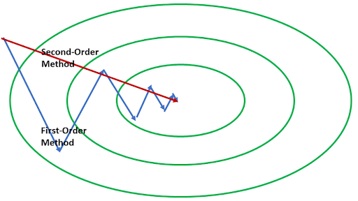

Effectiveness of Second-Order Optimization for Non-convex Machine
Learning
Minh Nguyen, Qasim Wani, Ryan Landry Fall 2021 ECE 4554/5554 Computer Vision: Course Project Virginia Tech
Problem Statement/Abstract
Classical optimization algorithms have become unfavorable in the world
of large models and big data. Over the past decade, first-order
optimization methods such as stochastic gradient descent (SGD) have
dominated machine learning literature. Despite proven theoretical
properties, second-order optimization techniques are far less prevalent
and unconventional in modern deep learning due to their prohibitive
computation. We bring awareness to these second-order techniques by
highlighting their advantages, such as robustness to hyperparameters,
finite step convergence, escaping saddle points, and resilience to
adversarial effects.
Approach
Most second-order optimization techniques are variants of Newton-type
methods. There have been quite a few proposed techniques such as K-FAC
[12, 13], Shampoo [11], L-BFGS [8], and BGD [9]. We utilize one such
algorithm, a sub-sampled trust-region (TR), to empirically demonstrate
higher performance than SGD [6], Adam [10], and AdaGrad [7]. TR methods
encompass a general class of iterative processes that define a region
around the current iterate within. They trust the model to be reasonable
approximations of the true objective function [3, 4]. We prove a higher
rate of convergence, robustness to hyperparameters such as the learning
rate, and resilience to stagnation by evaluating these techniques on
various image classification datasets such as CIFAR-10 and MNIST. See
figure 1 for an animated path of convergence of first and second-order
methods.
Due to limited access to GPU and TPU, we plan on training these
algorithms with relatively shallow neural networks of no more than 2-3
hidden layers. Comparing all these approaches must be 1:1. Hence we make
use of the same architecture irrespective of the algorithm for a
particular image classification task. Some metrics that we’re interested
in evaluating include, but are not limited to, training loss, wall-clock
time, generalization error, and a number of propagations to convergence.
Time-permitting, we’d like to evaluate these algorithms on more
real-world image classification datasets such as ImageNette [2] and
Wilds [5].
Note: This is a developing research area that has been
understudied in recent years due to the success of SGD. We challenge the
machine learning community to explore more advanced techniques proven to
be better than first-order optimization techniques. That being said, the
optimization field is highly complex and filled with rich literature.
Our team demonstrates what’s vital for the progress of machine learning
- thinking from first principles and challenging what we so often
dismiss when developing such architectures.

Figure 1. By utilizing curvature information, a Newton-based
method approaches at the optimal point in a single iteration.
Experiment and results
We expected to see the convergence rate of the TR method to be faster
than other optimization methods for the same ANN and dataset.
Additionally, we will compare our results with Xu’s works since our
approach contains the same ANN architecture and CIFAR-10 dataset [3].
For each dataset we choose to evaluate, we’ll be creating a
Convolutional Neural Network of 2-4 convolutional layers, 1-2 max
pooling layers, and 2-3 dense layers to train our models with. The key
difference lies in the optimization part. We’ll incorporate different
optimization functions and evaluate key differences with the following 4
experiments:
Convergence time - how many iterations before gradient stagnates.
Robustness to hyperparameters - effect of choosing an arbitrary set
of values for hyperparameters like learning rate and weight decay.
Generalization error - expected test loss.
Wall clock time - how long it took for each algorithm to run before
convergence/stagnation.
References
[1] Agarwal, N., Bullins, B. and Hazan, E., 2021.
Second-Order Stochastic Optimization for Machine Learning in Linear
Time.
[online] arXiv.org. Available at:
[Accessed 19 October 2021].
[2] Fastai, “fastai/imagenette,” GitHub. [Online]. Available:
https://github.com/fastai/imagenette. Accessed: 19-Oct-2021].
[3] Xu, Peng, Fred Roosta, and Michael W. Mahoney. "Second-order
optimization for non-convex machine learning: An empirical study."
Proceedings of the 2020 SIAM International Conference on Data
Mining.
Society for Industrial and Applied Mathematics, 2020.
[4] Nouiehed, Maher, and Meisam Razaviyayn. "A Trust Region Method for
Finding Second-Order Stationarity in Linearly Constrained Nonconvex
Optimization." SIAM Journal on Optimization 30.3 (2020): 2501-2529.
[5] Koh, Pang Wei, et al. "Wilds: A benchmark of in-the-wild
distribution shifts." International Conference on Machine Learning.
PMLR, 2021.
[6] Bottou, Léon. "Large-scale machine learning with stochastic gradient
descent." Proceedings of COMPSTAT'2010. Physica-Verlag HD, 2010.
177-186.
[7] Li, Xiaoyu, and Francesco Orabona. "On the convergence of stochastic
gradient descent with adaptive stepsizes." The 22nd International
Conference on Artificial Intelligence and Statistics. PMLR, 2019.
[8] Moritz, Philipp, Robert Nishihara, and Michael Jordan. "A
linearly-convergent stochastic L-BFGS algorithm." Artificial
Intelligence and Statistics. PMLR, 2016.
[9] Liew, Shan Sung, Mohamed Khalil-Hani, and Rabia Bakhteri. "An
optimized second order stochastic learning algorithm for neural network
training." Neurocomputing 186 (2016): 74-89.
[10] Kingma, Diederik P., and Jimmy Ba. "Adam: A method for stochastic
optimization." arXiv preprint arXiv:1412.6980 (2014).
[11] Gupta, Vineet, Tomer Koren, and Yoram Singer. "Shampoo:
Preconditioned stochastic tensor optimization." International Conference
on Machine Learning. PMLR, 2018.
[12] Pauloski, J. Gregory, et al. "Convolutional neural network training
with distributed K-FAC." SC20: International Conference for
High-Performance Computing, Networking, Storage and Analysis. IEEE,
2020.
[13] Martens, James, and Roger Grosse. "Optimizing neural networks with
kronecker-factored approximate curvature." International conference on
machine learning. PMLR, 2015.